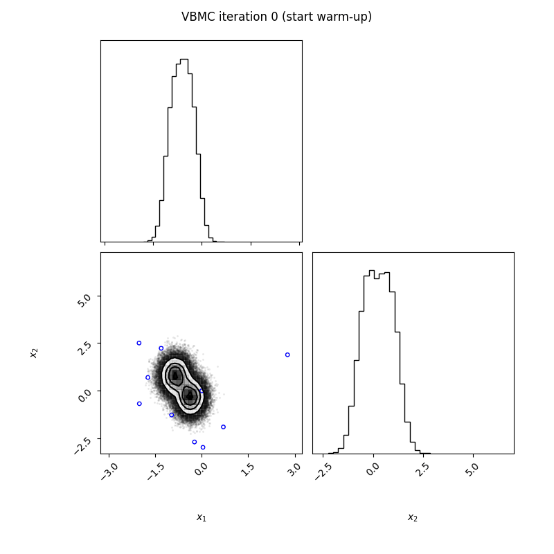

PyVBMC#
PyVBMC is a Python implementation of the Variational Bayesian Monte Carlo (VBMC) algorithm for posterior and model inference, previously implemented in MATLAB.
What is it?#
Can we perform Bayesian inference with expensive, black-box models?
VBMC is an approximate Bayesian inference method designed to fit computational models with a limited budget of potentially noisy likelihood evaluations, useful for computationally expensive models or for quick inference and model evaluation (Acerbi, 2018; 2020). PyVBMC works with black-box models in that it only needs to evaluate an unnormalized target log density (e.g., an unnormalized target log posterior).
PyVBMC simultaneously computes:
an approximate posterior distribution of the model parameters;
an approximation — technically, an approximate lower bound — of the log model evidence (also known as log marginal likelihood or log Bayes factor), a metric used for Bayesian model selection.
Example run#
The figure below shows an example PyVBMC run on a “banana” target density. The corner plot shows the approximate posterior across iterations (contour plot and histograms of the marginals). The dots represent evaluations of the target density (blue: previously sampled points, green: points sampled in the current iteration). PyVBMC converges to an excellent approximation of the true posterior with a few dozens evaluations of the target density.
{kind=link}
Extensive benchmarks on both artificial test problems and a large number of real model-fitting problems from computational and cognitive neuroscience show that VBMC generally — and often vastly — outperforms alternative methods for sample-efficient Bayesian inference. VBMC runs with virtually no tuning and it is very easy to set up for your problem.
Should I use PyVBMC?#
PyVBMC is effective when:
the model log-likelihood function is a black-box (e.g., the gradient is unavailable);
the likelihood is at least moderately expensive to compute (say, half a second or more per evaluation);
the model has up to
D = 10continuous parameters (maybe a few more, but no more thanD = 20);the target posterior density is continuous and reasonably smooth;
the log-likelihood can be evaluated exactly (e.g., analytically or numerically, but without noise in the evaluation itself).
Conversely, if your model can be written in closed form and is fast to evaluate, you should exploit the powerful machinery of probabilistic programming frameworks such as Stan or PyMC.
Note: If you are interested in point estimates or in finding better starting points for PyVBMC, check out Bayesian Adaptive Direct Search in Python (PyBADS), our companion method for fast Bayesian optimization.
How-to#
Contributing#
References#
Huggins, B., Li, C., Tobaben, M., Aarnos, M., & Acerbi, L. (2023). PyVBMC: Efficient Bayesian inference in Python. Journal of Open Source Software 8(86), 5428, https://doi.org/10.21105/joss.05428.
Acerbi, L. (2018). Variational Bayesian Monte Carlo. In Advances in Neural Information Processing Systems 31: 8222-8232. (paper + supplement on arXiv, NeurIPS Proceedings)
Acerbi, L. (2020). Variational Bayesian Monte Carlo with Noisy Likelihoods. In Advances in Neural Information Processing Systems 33: 8211-8222 (paper + supplement on arXiv, NeurIPS Proceedings).
You can cite PyVBMC in your work with something along the lines of
We estimated approximate posterior distibutions and approximate lower bounds to the model evidence of our models using Variational Bayesian Monte Carlo (VBMC; Acerbi, 2018, 2020) via the PyVBMC software (Huggins et al., 2023). PyVBMC combines variational inference and active-sampling Bayesian quadrature to perform approximate Bayesian inference in a sample-efficient manner.
BibTeX#
@article{huggins2023pyvbmc,
title = {PyVBMC: Efficient Bayesian inference in Python},
author = {Bobby Huggins and Chengkun Li and Marlon Tobaben and Mikko J. Aarnos and Luigi Acerbi},
publisher = {The Open Journal},
journal = {Journal of Open Source Software},
url = {https://doi.org/10.21105/joss.05428},
doi = {10.21105/joss.05428},
year = {2023},
volume = {8},
number = {86},
pages = {5428}
}
@article{acerbi2018variational,
title={{V}ariational {B}ayesian {M}onte {C}arlo},
author={Acerbi, Luigi},
journal={Advances in Neural Information Processing Systems},
volume={31},
pages={8222--8232},
year={2018}
}
@article{acerbi2020variational,
title={{V}ariational {B}ayesian {M}onte {C}arlo with noisy likelihoods},
author={Acerbi, Luigi},
journal={Advances in Neural Information Processing Systems},
volume={33},
pages={8211--8222},
year={2020}
}
@article{acerbi2019exploration,
title={An Exploration of Acquisition and Mean Functions in {V}ariational {B}ayesian {M}onte {C}arlo},
author={Acerbi, Luigi},
journal={PMLR},
volume={96},
pages={1--10},
year={2019}
}
License and source#
PyVBMC is released under the terms of the BSD 3-Clause License. The Python source code is on GitHub.
Acknowledgments:#
Work on the PyVBMC package was funded by the Finnish Center for Artificial Intelligence FCAI.